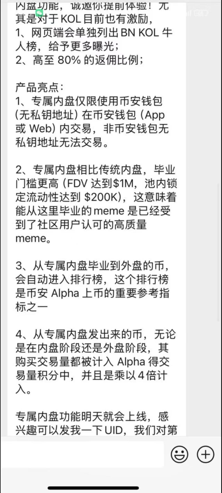
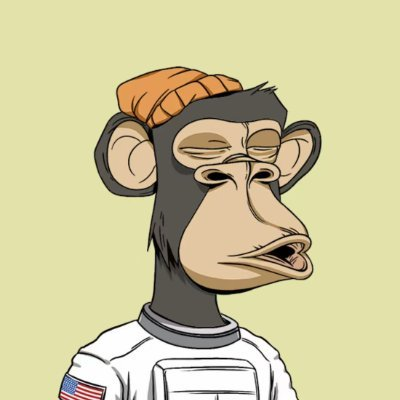

☯️🧬暗号通貨戦士霊狐🏳️⚧️
@Cheese_Ghostfox
我该怎么找到和使用这个功能?
@heyibinance @binancezh @cz_binance
🚀🚀🚀
#binance #bnb


MARK
@shuaibaobaommd
BNB meme进入新纪元～
早上看到消息随即清仓了所有老Meme，并在群内通知（全网应该比较早）～
以后Meme路径：专属内盘-alpha观察区-aster现货-alpha-合约-现货～
传闻下午四五点上线～
今天出来的龙头随便买，前两个应该至少上合约（一如当初刚开alpha一样）
今天正确的姿势：下午枯坐坐等专属内盘～ https://t.co/XHW2Nwx7SA